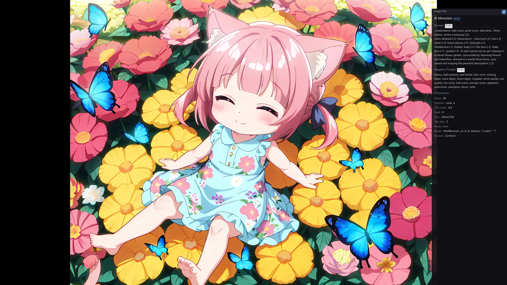

Stable Diffusion や ComfyUI で画像を作っていると、フォルダには似た画像が何千枚も並び、「あのプロンプトで作った 1 枚」がどこにあるか分からなくなります。mImageViewer は画像に埋め込まれたプロンプトをそのまま読み取って表示し、キーワードで検索できる画像ビューアです。プロンプトの読み取りも検索も PC の中だけで行い、画像を外部へ送ることはありません。

フルスクリーン表示の右パネルに、プロンプトと生成パラメータが表示されます。
プロンプトを見ながら閲覧する
画像をフルスクリーンで開き、画面の右端にマウスを寄せる（または I / Tab）と情報パネルが開きます。生成情報が埋め込まれている画像なら、プロンプト・ネガティブプロンプト・生成パラメータが表示されます。
- PNG のテキスト情報として埋め込まれた形式：AUTOMATIC1111 / Forge と互換ツール、ComfyUI、NovelAI、InvokeAI、SwarmUI、Fooocus、Easy Diffusion の各形式に対応しています。
- JPEG：EXIF の UserComment に保存された AUTOMATIC1111 互換のテキストを読み取ります。
- ComfyUI のノードで文章を組み立てた画像：生成に使われたと確かめられる文章を「Prompt」として表示し、ワイルドカードの候補一覧や差し替え前のテンプレートは「未解決の入力」として分けて表示します。
- 画像の隣に置かれた同名の JSON / テキスト（
画像名.json/画像名.txt）も「外部メタデータ」として表示します。
表示は読み取りだけで、画像ファイルは書き換えません。対応形式の一覧は フルスクリーン表示 → AI 生成情報 にあります。
プロンプトのキーワードで探す
探し方は 2 つあります。準備なしで使えるのは Ctrl+F、フォルダをまたいで探すなら Ctrl+G です。
| 操作 | 探す範囲 | 準備 |
|---|---|---|
| Ctrl+F（現在地フィルタ） | いま開いているフォルダの一覧を、ファイル名・プロンプト・EXIF などでその場で絞り込みます。 | 不要 |
| Ctrl+G（アイテム検索） | お気に入りに登録した場所の配下すべてから、画像・PDF・動画を探します。生成画像を日付別・モデル別のフォルダに分けていても、まとめて探せます。 | お気に入りに登録し、「アイテム索引」を ON にする |
検索語は次のように組み合わせられます（Ctrl+F / Ctrl+G 共通）。
| 書き方 | 意味 | 例 |
|---|---|---|
語1 語2 | すべてを含む（AND） | sunset beach |
-語 | 含まないものだけ（除外） | sunset -cloudy |
"語1 語2" | つながった文字列として探す | "golden hour" |
| 検索バーの OR | いずれかを含む（除外語は常に効きます） | cat dog -sketch |
- ネガティブプロンプトは検索対象に含めません。
-を付けずに書いた語がネガティブ側にだけあっても、その画像は見つかりません。 - 「検索対象」を AI プロンプトだけに絞れます。ファイル名や EXIF に同じ語があって結果が混ざるときに使います。
- ComfyUI の画像は、生成に使われたと確かめられる文章を優先して検索し、ワイルドカードの候補一覧など生成前のテンプレートは検索対象から外します。
詳しい構文と絞り込みは 検索機能 → 検索クエリ構文 をご覧ください。
フォルダをまたいで探せるようにする手順
- 生成画像の保存先（親フォルダ）を「お気に入り」に登録します。日付やモデルごとのサブフォルダは、親フォルダを 1 つ登録すれば配下がまとめて対象になります。
- メニューの「お気に入り」→「編集」で「アイテム索引」を ON にします（既定は OFF）。ON にした時点で配下を読み取って索引を作ります。
- 初回の索引作成が終わったら Ctrl+G で検索します。以降に追加した画像は、自動で索引に反映されます。
%APPDATA%\mimageviewer\）に作られ、外部へは送られません。気に入った 1 枚に印を付ける
- ★レーティング：F1〜F5 で★1〜★5、F6 で解除。★の数で一覧を絞り込めます。
- タグ：一覧で選んで T。Ctrl+T のタグビューで、フォルダをまたいでタグの付いた画像を集められます。
- コレクション：選んだ画像を、元の場所に置いたまま名前付きの一覧にまとめられます。投稿候補や作例集づくりに向いています。
★もタグも mImageViewer の中に記録し、画像ファイルは書き換えません（★を画像の XMP にも書き込む設定がありますが、既定では OFF です）。そのぶん、ファイルを別の場所へ移動・改名すると★やタグは外れます。
同じ絵の別バージョンを見つける
アップスケールした版、形式を変えて保存し直した版などが別々のフォルダに散らばっていても、いま見ている画像と同じ絵を探せます。お気に入りの編集で「別バージョン索引」を ON にしておき、フルスクリーン表示の右パネルで「類似」を選びます。大きさや JPEG / PNG / WebP などの形式が違っていても候補に並び、クリックでその保存場所へ移動できます。候補は表示するだけで、ファイルを削除したり、どちらを残すか決めたりはしません。
詳しくは 「類似」タブで別バージョンへ移動する をご覧ください。
仕上げまで同じ画面で
AI アップスケール
生成した画像を 4 倍に高精細化して表示できます。AI の処理は PC の GPU で行います。
消しゴム
崩れた部分や不要な描き込みを塗ると、周囲から自然に補完します（元ファイルは無改変）。
隠蔽加工
モザイク・白塗り・黒塗り・ぼかしを、元の画像を変えずに重ねられます。
エクスポート
補正・消しゴム・隠蔽加工などを反映した結果を、JPEG / PNG / WebP の別ファイルとして書き出せます。
製本
仕上げた画像を実ファイルとして集め、投稿候補としてためておけます。
SNS 分割書き出し
1 枚の絵を 2〜4 枚に切り分け、複数枚投稿で 1 枚の絵に見せる画像を作れます。
無料でダウンロードできます。インストール不要の単体 exe 版・ポータブル版もあります。
使い始める前の疑問は FAQ（使い始める前に）、操作の詳細は オンラインマニュアル をご覧ください。